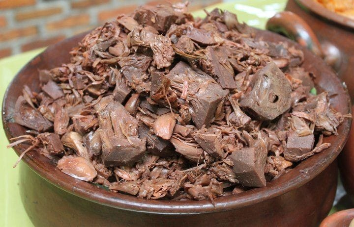

Gudeg hidangan khas Provinsi Daerah Istimewa Yogyakarta yang terbuat dari nangka muda yang dimasak dengan santan. Warna cokelat biasanya dihasilkan oleh daun jati yang dimasak bersamaan. Gudeg biasanya dimakan dengan nasi dan disajikan dengan kuah santan kental (areh), ayam kampung, telur, tempe, tahu, dan sambal goreng krecek. Gudeg sangat populer di Jawa, hidangan ini merupakan hidangan populer baik sebagai masakan rumahan maupun hidangan jalanan. Gudeg juga diproduksi secara industri sebagai makanan kaleng. Gudeg juga bisa ditemui di luar Indonesia, khususnya di negara tetangga seperti Malaysia dan Singapura.
Resep Gudeg
300 Gram nangka muda
3 Butir telur rebus
65 Ml santan kental
2 Kantong teh celup (pengganti daun jati)
100 Gram gula merah
3 Lembar daun salam
3 Lembar daun jeruk
1 Jempol lengkuas geprek
2 Sendok teh garam
1 Sendok teh ketumbar bubuk
500 Ml air
Bumbu Halus
4 Siung bawang putih
3 Butir bawang merah besar
2 Butir kemiri
2 Cm jahe
2 Cm kunyit